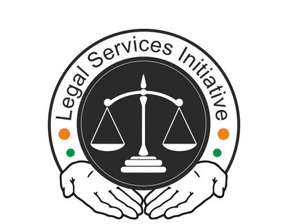

न्याय विभाग
DEPARTMENT OF JUSTICE
सत्यमेव जयते

सत्यमेव जयते
NYAYABOT provides instant information on various DoJ functions, including details about judges, court cases, fine payments, eFiling procedures, and more. This interactive assistant helps you navigate DoJ services with ease and learns over time to enhance your experience.